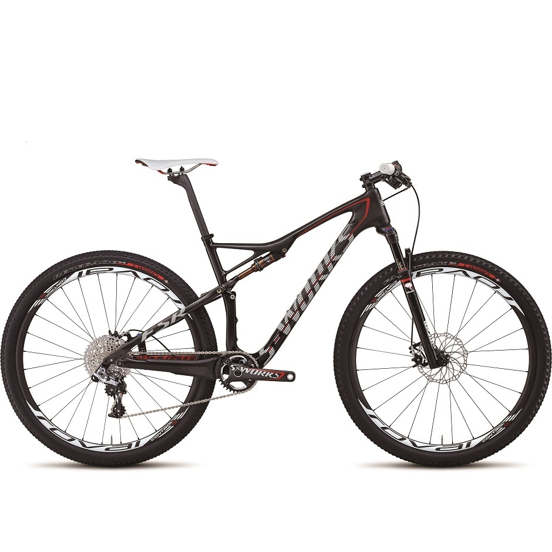

The full-suspension, carbon fiber, 2014 S-Works Epic 29er Mountain Bike is the first 29er to win a World Cup event, and the bike Mountain Bike Action magazine describes as the ‘best bike we've ever ridden’. One of two S-Works versions, this model is equipped with SRAM's XX1 component group and Magura MT8 disc brakes.
S-Works 2014 Epic World Cup 29er Full Suspension Mountain Bike
$8,999.99

| Frame | FACT 11m carbon front triangle, SWAT EMT tool cradle, 29" World Cup geometry, FACT IS construction, full FACT carbon rear triangle, World Cup mega-chainstays, single ring only, tapered headtube, carbon PF30 BB, full internal shift/brake routing, 142mm dropouts, sealed cartridge bearing pivots, replaceable derailleur hanger, 95mm |
|---|---|
| Fork | Custom RockShox SID World Cup 29 Brain, inertia valve damper, Solo Air spring, tapered carbon crown/steerer, top-mount Brain Fade and rebound adj., 15mm thru-axle, 95mm travel |
| Rear Shock | FOX/Specialized remote Mini-Brain w/ AUTOSAG, Kashima coating, inertia valve w/ Kevlar hose, Brain Fade adjust, 200x48mm, 95mm travel |
| Shifters | SRAM XX1, 11-speed, carbon/aluminum trigger, w/ MatchMaker clamp |
| Rear Derailleur | SRAM XX1 Type 2, 11-speed |
| Brakes | Magura MT8, hydraulic disc, Hi Friction pad, alloy caliper, Storm SL rotor, S/M: 160mm, L/XL: 180mm rotor 160mm rear |
| Brake Levers | Magura MT8, carbon master cylinder/lever blade, hollow lever pivot, reach adj. |
| Cranks | S-Works OS carbon, integrated 1-piece spider, custom SRAM XX1 style chainring, S: 170mm, Others: 175mm 34T and 32T ring included |
| Cassette | SRAM XX1, 11-speed, 10-42 |
| Bottom Bracket | PF30, OS press-in bearings, sealed cartridge |
| Chain | SRAM XX1, 11-speed, hollow plates/pins, PowerLink |
| Hubs | Roval Control SL 29, alloy hub body w/ Labyrinth design, 15mm thru-axle, 24h / Roval Control SL 29 142+, DT Swiss Star Ratchet, XX1 driver body, 12mm thru-axle, 28h |
| Spokes | DT Swiss Revolution, 2.0/1.5/2.0mm stainless |
| Rims | Roval Control SL 29, carbon disc, 22mm internal width, 24h/28h |
| Tires | S-Works Fast Trak, 2Bliss Ready, 29x2.0, foldable aramid bead, 120 TPI |
| Headset | 1-1/8 and 1-1/2 inch threadless, Campy style upper with 1-1/2" lower, cartridge bearings |
| Stem | Syntace F109, 6-degree rise, 31.8mm clamp |
| Handlebars | S-Works XC, flat bar, carbon, 700mm wide, 8-degree backsweep, 31.8mm |
| Grips | Specialized Sip Grip, light lock-on, half-waffle aramid-infused, S/M: regular, Others: XL thickness |
| Saddle | Body Geometry Phenom Expert, hollow Ti rails, 143mm |
| Seat Post | Specialized carbon, single bolt, 27.2mm, S: 350mm, Others: 400mm |
| Seat Binder | Specialized 7050 hard anodized alloy, single bolt, 31.8mm |